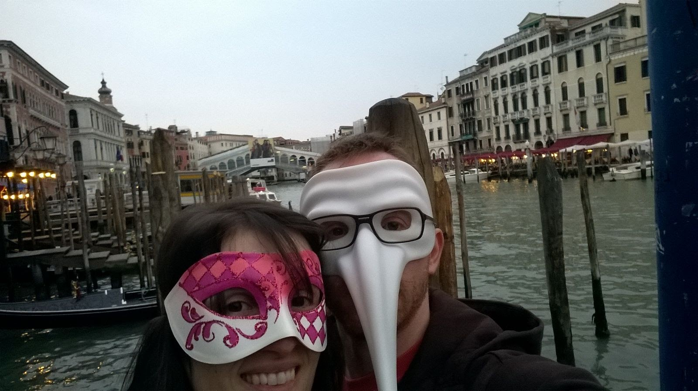

Carlo & Maura
Ebbene si.. ci sposiamo!

{kind=link}
{kind=link}
Per qualunque ragione, non esitate a chiamarci!
Carlo: (+39) 347 71 21 650Maura: (+39) 347 88 999 14
{kind=link}
Benvenuti a Villasalto
Come arrivare alla ridente Villasalto?
Da Cagliari a:
→ casa di Carlo
→ casa di Maura
E per i ritardatari...
→ direttamente in chiesa!
Nota Bene: in particolare se pensate di trattenervi qualche giorno in più in Sardegna, vi consigliamo di noleggiare una macchina. In ogni caso sarà difficile muoversi tramite mezzi pubblici. Se tuttavia preferite non affittare la macchina, o volete condividerla con altri, fateci sapere e proveremo a mettervi in contatto con qualcuno con le stesse esigenze o comunque vi troveremo un passaggio!
{kind=link}
-Acconciature-
Trucco e parrucco
Per chi fosse interessato/a alla piega per il nostro "gran giorno", vi possiamo suggerire alcune opzioni:
[A Cagliari]
prezzo piega semplice 15 euro, piega elaborata circa 30 euro. Prenotabile anche da noi se preferite. Fateci sapere!
[A Villasalto]
Parrucchiera Laura
prezzo piega .... euro, disponibile a casa della sposa dalle ... Da prenotare tramite noi. Fateci sapere!
E sarà anche presente a casa della sposa una truccatrice: se qualcuna ne ha necessità, come al solito, FATECI SAPERE!
{kind=link}
E dopo aver detto "Sì, lo voglio..."
Il ricevimento si terrà presso Is Paulis Area Club
{kind=link}
Retorica a parte vogliamo dirvi sinceramente che la vostra presenza è il regalo più gradito, in particolare da parte dei tanti di voi che sono venuti apposta per noi da tanto lontano. Ciononostante, se voleste farci un pensierino, vi diamo qui qualche idea...
La nostra "luna di miele"
IL CAMMINO DI SANTIAGO
Come molti di voi già sanno, abbiamo scelto come viaggio di nozze di peregrinare in bici sulla via per Santiago. Se volete sapere di più sulle nostre tappe trovate una mappa dettagliata QUI. Se voleste aiutarci con l'equipaggiamento, il viaggio o la permanenza in hotel anzichè in Albergue, potete trovare i dettagli QUI.
Lavori, lavori...
Abbiamo ereditato una passione per i muratori in casa e i lavori interminabili. Quindi portiamo avanti un piano per rendere abitabile il soppalco che abbiamo ricavato abbassando il soffitto: così quando verrete a trovarci sarete molto più comodi! Se ci volete sostenere in questa ristrutturazione, e eventualmente darci un vostro parere su cosa fare della mansarda, trovate i dettagli QUI.
"Provviste"
Non abbiamo fatto una lista nozze, ma abbiamo preparato una Lista dei Desideri su Amazon per completare l'arredamento, le suppellettili, il surplus.. e con qualcosa che ci potrà servire durante il viaggio. La trovate QUI.
GRAZIE!
{kind=link}
Dove alloggiare
Ecco le opzioni che vi proponiamo per la vostra permanenza in zona.
{kind=link}
Fateci sapere se sarete dei nostri!
{kind=link}
Le vostre foto
Se avete scatti imperdibili che ci riguardano, seguite
QUESTO LINK:
abbiamo preparato uno spazio dove potete condividerle e anche noi potremmo averle. Grazie!
{kind=link}